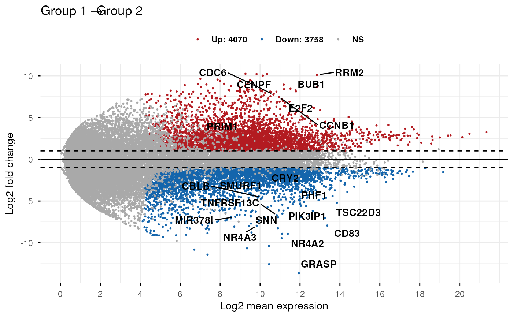
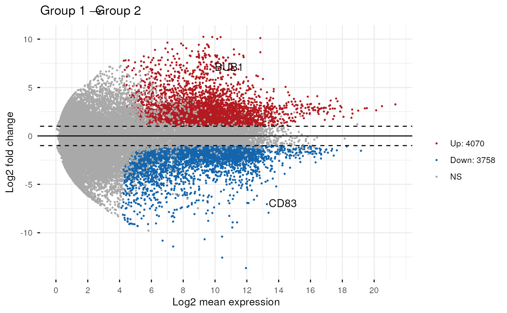
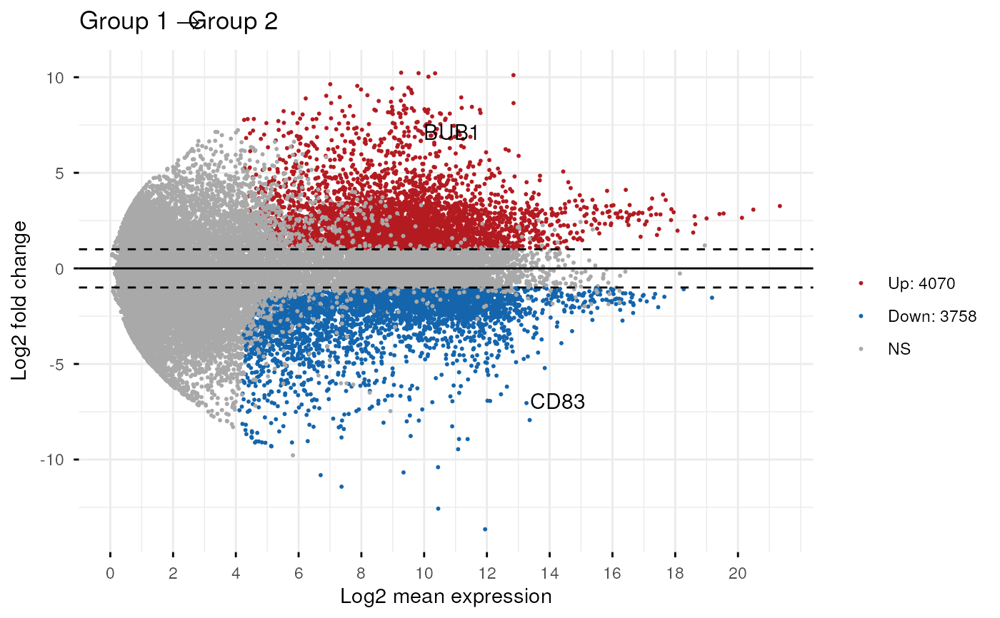

Make MA-plot which is a scatter plot of log2 fold changes (M, on
the y-axis) versus the average expression signal (A, on the x-axis). M
= log2(x/y) and A = (log2(x) + log2(y))/2 = log2(xy)*1/2, where x
and y are respectively the mean of the two groups being compared.
ggmaplot(
data,
fdr = 0.05,
fc = 1.5,
genenames = NULL,
detection_call = NULL,
size = NULL,
alpha = 1,
seed = 42,
font.label = c(12, "plain", "black"),
label.rectangle = FALSE,
palette = c("#B31B21", "#1465AC", "darkgray"),
top = 15,
select.top.method = c("padj", "fc"),
label.select = NULL,
main = NULL,
xlab = "Log2 mean expression",
ylab = "Log2 fold change",
ggtheme = theme_classic(),
...
)Arguments
- data
an object of class DESeqResults, get_diff, DE_Results, matrix or data frame containing the columns baseMean (or baseMeanLog2), log2FoldChange, and padj. Rows are genes.
Two possible formats are accepted for the input data:
1/
baseMean | log2FoldChange | padj. This is a typical output from DESeq2 pipeline. Here, we'll use log2(baseMean) as the x-axis variable.2/
baseMeanLog2 | log2FoldChange | padj. Here, baseMeanLog2 is assumed to be the mean of logged values; so we'll use it as the x-axis variable without any transformation. This is the real A in MA plot. In other words, it is the average of two log-scales values:A = (log2(x) + log2(y))/2 = log2(xy)*1/2
Terminology:
baseMean: the mean expression of genes in the two groups.
log2FoldChange: the log2 fold changes of group 2 compared to group 1
padj: the adjusted p-value of the used statiscal test.
- fdr
Accepted false discovery rate for considering genes as differentially expressed.
- fc
the fold change threshold. Only genes with a fold change >= fc and padj <= fdr are considered as significantly differentially expressed.
- genenames
a character vector of length nrow(data) specifying gene names corresponding to each row. Used for point labels.
- detection_call
a numeric vector with length = nrow(data), specifying if the genes is expressed (value = 1) or not (value = 0). For example detection_call = c(1, 1, 0, 1, 0, 1). Default is NULL. If detection_call column is available in data, it will be used.
- size
points size.
- alpha
numeric value betwenn 0 an 1 specifying point alpha for controlling transparency. For example, use alpha = 0.5.
- seed
Random seed passed to
set.seed. ifNA, set.seed will not be called. Default is 42 for reproducibility.- font.label
a vector of length 3 indicating respectively the size (e.g.: 14), the style (e.g.: "plain", "bold", "italic", "bold.italic") and the color (e.g.: "red") of point labels. For example font.label = c(14, "bold", "red").
- label.rectangle
logical value. If TRUE, add rectangle underneath the text, making it easier to read.
- palette
the color palette to be used for coloring or filling by groups. Allowed values include "grey" for grey color palettes; brewer palettes e.g. "RdBu", "Blues", ...; or custom color palette e.g. c("blue", "red"); and scientific journal palettes from ggsci R package, e.g.: "npg", "aaas", "lancet", "jco", "ucscgb", "uchicago", "simpsons" and "rickandmorty".
- top
the number of top genes to be shown on the plot. Use top = 0 to hide to gene labels.
- select.top.method
methods to be used for selecting top genes. Allowed values include "padj" and "fc" for selecting by adjusted p values or fold changes, respectively.
- label.select
character vector specifying some labels to show.
- main
plot main title.
- xlab
character vector specifying x axis labels. Use xlab = FALSE to hide xlab.
- ylab
character vector specifying y axis labels. Use ylab = FALSE to hide ylab.
- ggtheme
function, ggplot2 theme name. Default value is theme_pubr(). Allowed values include ggplot2 official themes: theme_gray(), theme_bw(), theme_minimal(), theme_classic(), theme_void(), ....
- ...
other arguments to be passed to
ggpar.
Value
returns a ggplot.
Examples
data(diff_express)
# Default plot
ggmaplot(diff_express, main = expression("Group 1" %->% "Group 2"),
fdr = 0.05, fc = 2, size = 0.4,
palette = c("#B31B21", "#1465AC", "darkgray"),
genenames = as.vector(diff_express$name),
legend = "top", top = 20,
font.label = c("bold", 11),
font.legend = "bold",
font.main = "bold",
ggtheme = ggplot2::theme_minimal())

# Add rectangle around labels
ggmaplot(diff_express, main = expression("Group 1" %->% "Group 2"),
fdr = 0.05, fc = 2, size = 0.4,
palette = c("#B31B21", "#1465AC", "darkgray"),
genenames = as.vector(diff_express$name),
legend = "top", top = 20,
font.label = c("bold", 11), label.rectangle = TRUE,
font.legend = "bold",
font.main = "bold",
ggtheme = ggplot2::theme_minimal())
 # Select specific genes to show
# set top = 0, then specify genes using label.select argument
ggmaplot(diff_express, main = expression("Group 1" %->% "Group 2"),
fdr = 0.05, fc = 2, size = 0.4,
genenames = as.vector(diff_express$name),
ggtheme = ggplot2::theme_minimal(),
top = 0, label.select = c("BUB1", "CD83")
)

# Select specific genes to show
# set top = 0, then specify genes using label.select argument
ggmaplot(diff_express, main = expression("Group 1" %->% "Group 2"),
fdr = 0.05, fc = 2, size = 0.4,
genenames = as.vector(diff_express$name),
ggtheme = ggplot2::theme_minimal(),
top = 0, label.select = c("BUB1", "CD83")
)
